6 月 30 日：Large Language Model Teaches Visual 等视觉表征论文归档
本页按日期归档近期论文，保留优先级、主题、来源与方法线索，方便回看同一批工作的研究脉络。
先读 Large Language Model Teaches Visual。用语言-only LLM 产生细粒度概念监督来蒸馏 vision-only student，直接对应视觉表征蒸馏与弱多模态监督。 其余论文按 P1/P2 与主题顺序扫读，重点看方法图、消融设置和是否能迁移到通用视觉表征。
论文索引
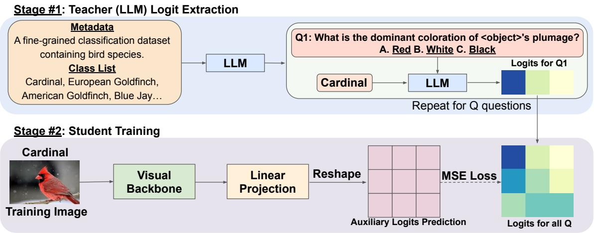
Large Language Model Teaches Visual Students: Cross-Modality Transfer of Fine-Grained Conceptual Knowledge
高相关；详见方法、贡献和实验边界。
方法：用语言-only LLM 产生细粒度概念监督来蒸馏 vision-only student，直接对应视觉表征蒸馏与弱多模态监督
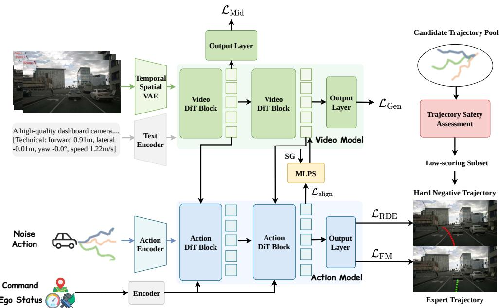
ReWorld: Learning Better Representations for World Action Models
高相关；详见方法、贡献和实验边界。
方法：ReWorld 直接优化 world action model 的中间表征，和视频预训练、JEPA/world-model 线高度相关
Parallel Rollout Approximation for Pixel-Space Autoregressive Image Generation
高相关；详见方法、贡献和实验边界。
方法：PRA 不依赖离散 tokenizer，直接在 pixel-space AR 中学习中间状态，并报告 probing accuracy 提升
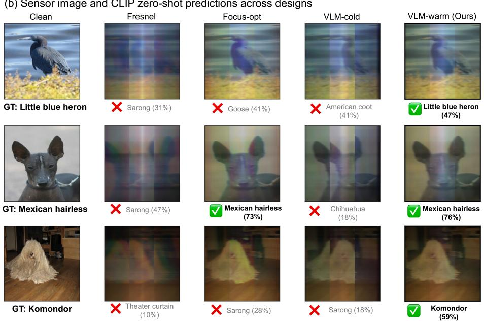
VLM-Aware Meta-Optic Front-End Design for Frozen Vision-Language Models
中高相关；详见方法、贡献和实验边界。
方法：CODA 直接用 frozen CLIP 目标优化光学前端，并迁移到 SigLIP/DINOv2，说明视觉基础模型目标可反向塑造输入成像
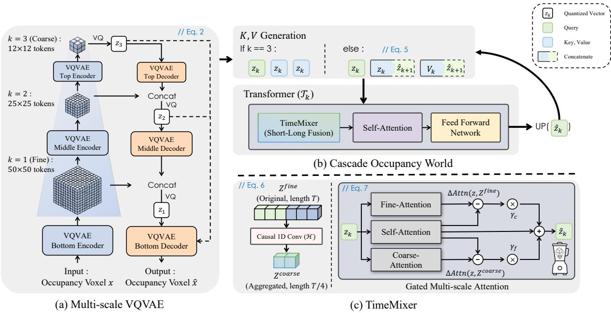
CascadeOcc: Rethinking 3D Occupancy World Models with Cascaded VQ Representations
中高相关；详见方法、贡献和实验边界。
方法：CascadeOcc 用 cascaded VQ 表示建模 3D occupancy world dynamics，适合跟踪离散视觉 token/world representation
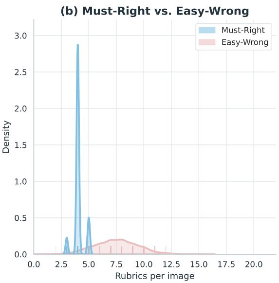
PerceptionRubrics: Calibrating Multimodal Evaluation to Human Perception
中高相关；详见方法、贡献和实验边界。
方法：PerceptionRubrics 把 VLM 视觉感知评测拆成原子 rubrics，可用于判断视觉表征是否真正保留细节
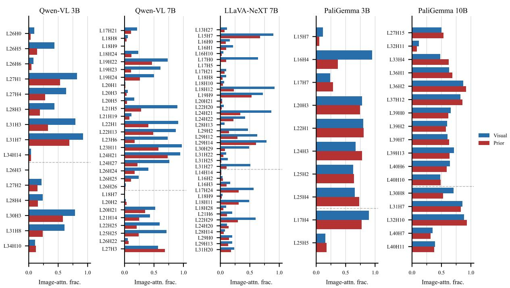
Vision-Default, Prior-Override: Causal Mechanisms of Perception-Knowledge Conflict in Vision-Language Models
中高相关；详见方法、贡献和实验边界。
方法：论文定位 VLM 中视觉证据与世界知识冲突的因果注意力头，有助于理解视觉 grounding 是否被语言先验覆盖
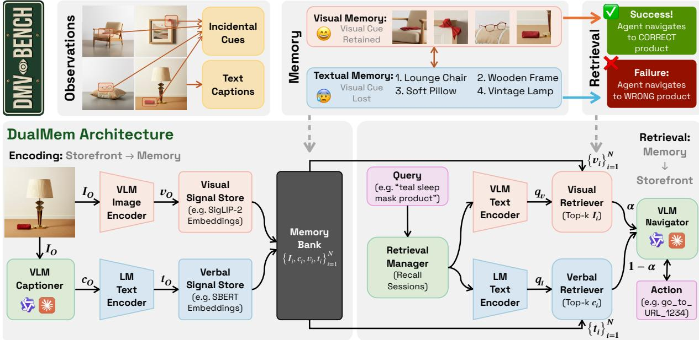
DMV-Bench: Diagnosing Long-Horizon Multimodal Agents' Visual Memory with Incidental Cue Injection
中高相关；详见方法、贡献和实验边界。
方法：DMV-Bench 把长期记忆信号限制在像素 cue 中，可测试模型是否真的保留视觉表征而非文本泄漏

Reflect-R1: Evidence-Driven Reflection for Self-Correction in Long Video Understanding
中高相关；详见方法、贡献和实验边界。
方法：Reflect-R1 通过检索客观视觉证据做自校正，和视频 VLM 的 grounding/post-training 相关
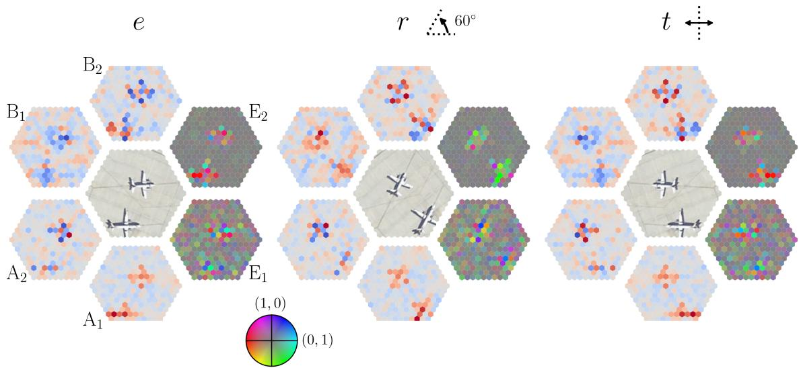
A Unified Framework for Vision Transformers Equivariant to Discrete Subgroups of $\mathrm{O}(2)$
中相关；详见方法、贡献和实验边界。
方法：给 ViT 加 O(2) 离散子群等变性，在数据稀缺视觉表征学习中可能减少对数据增强的依赖
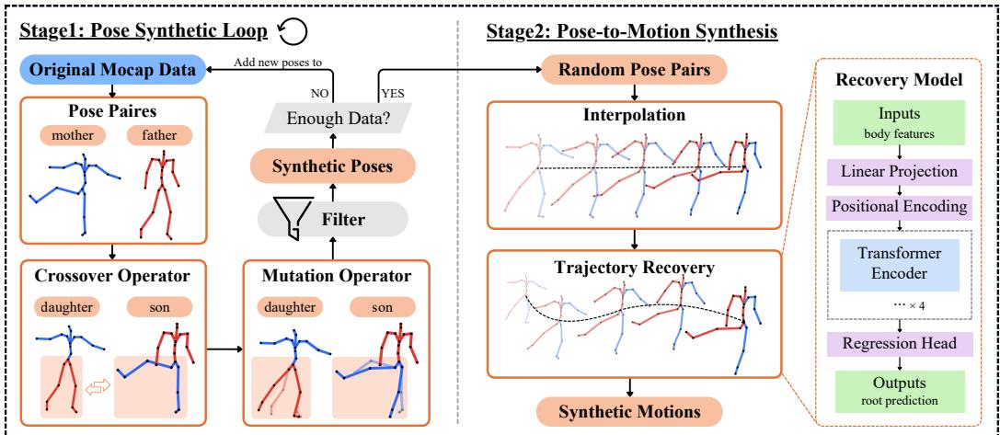
Beyond MoCap: Scaling Motion Tokenizers with Synthetic Human Motion for Generative Modeling
中相关；详见方法、贡献和实验边界。
方法：Motion tokenizer 与合成运动扩展 codebook 的想法，可迁移到视频 tokenization/动作表征
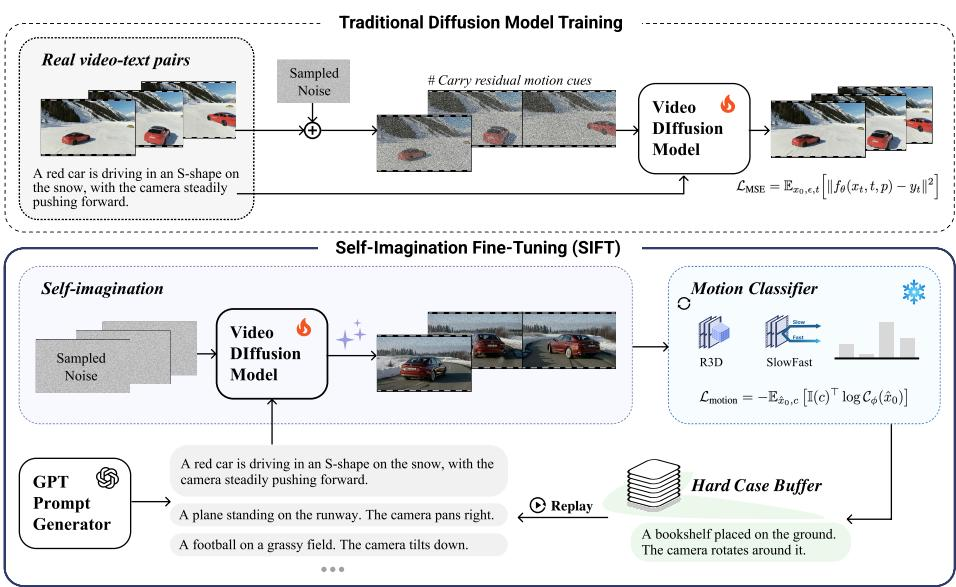
SIFT: Self-Imagination Fine-Tuning for Physically Plausible Motion in Video Diffusion Models
中相关；详见方法、贡献和实验边界。
方法：SIFT 让视频 diffusion 从自身生成样本中学习物理运动，属于自生成数据驱动的 video model 后训练
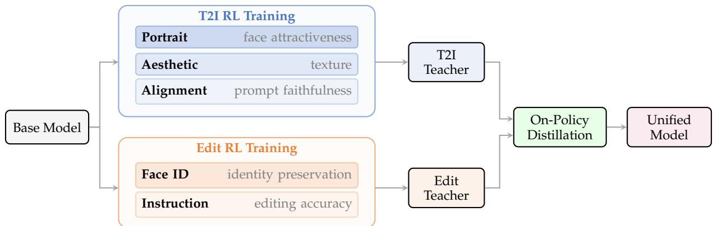
Qwen-Image-2.0-RL Technical Report
中相关；详见方法、贡献和实验边界。
方法：Qwen-Image-2.0-RL 是视觉生成 post-training 技术报告，包含 VLM reward 与 on-policy distillation，可扫其视觉奖励信号设计
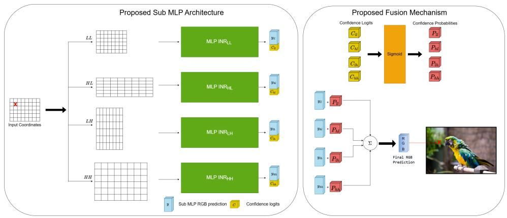
ScaLe-INR: Scale and Learn Implicit Neural Representations
中相关；详见方法、贡献和实验边界。
方法：ScaLe-INR 关注连续信号表示的频谱分解，对图像/3D INR 表征有方法参考，但不是 SSL 主线